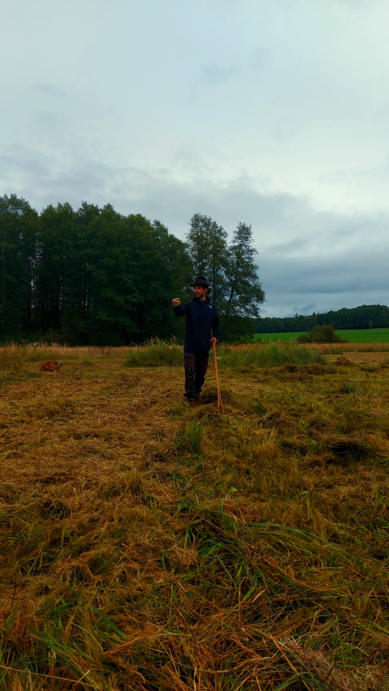

Naše mise
Jsme základní organizace ČSOP věnující se ochraně přírody v regionu Ostrova u Lanškrouna. Chráníme biotopy, vzděláváme veřejnost a zapojujeme komunitu.
Historie
Organizace byla založena s cílem chránit unikátní hodnoty ostrovské kotliny. Navazujeme na odkaz Karla Málka.
Jak pomáháme
Dobrovolnictví
Údržba lokalit a monitoring.
Ochrana
Praktická péče o rezervace.
Osvěta
Šíření povědomí o přírodě.